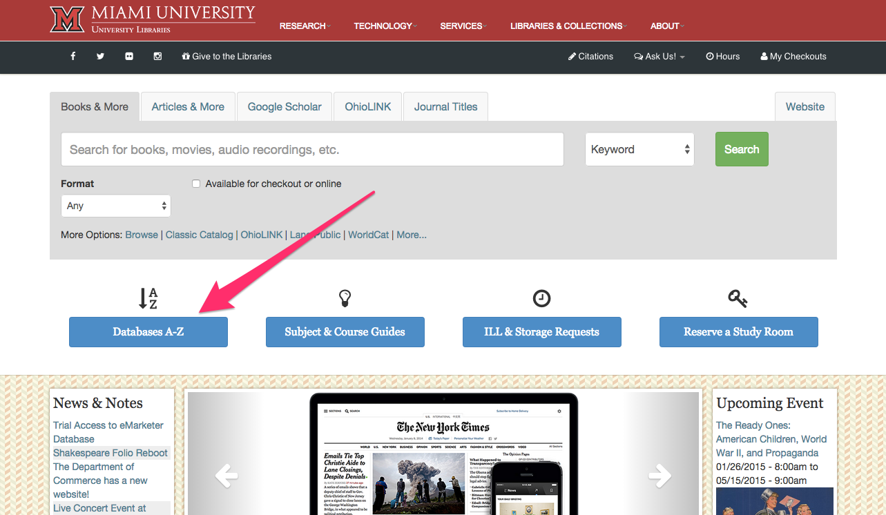
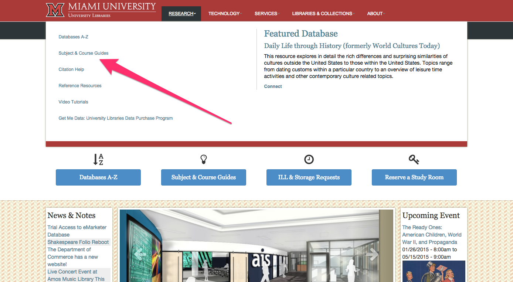

Digital Ethics
Finding & Evaluating Resources
Created by Ryan P. Randall / @foureyedsoul
Hello!
I'm Ryan Randall, from the library!
I'm here to help you prepare for your analysis and reflection papers.
In the next 35 minutes, we will work on:
- Evaluating appropriate secondary sources
- Learning useful places to find them
- Reviewing APA citation format
Reflection Essay
"What have I learned from this process?"

Reflection Essay
"What have I learned from this process?"

Evaluating appropriate secondary sources
Secondary sources are:
- removed from the event by degrees of time or involvement
- often summarizing or analyzing
- often journalistic or historical

Evaluating with "CAARP" test
- Currency, or when—timeliness of information
- Authority, or who—expertise of author
- Accuracy, or how—support for claims with references
- Relevance, or why for your essay—suitability of approach and language
- Purpose, or why written at all—original reason for publication
Evaluating appropriate secondary sources
If you'd like to return to this later, here's a short but useful video from Wichita State University Libraries that discusses this evaluation strategy in more detail.

Useful places to find secondary sources
That's right, King Library!
More specifically, in databases.
Unlike Google, DuckDuckGo, or other open internet searches, databases are collections of items that fit particular criteria. This makes them less overwhelming and often more likely to bring back results that are appropriate for essays.
From the Database to Your Inbox
Go ahead and take a minute to email the resources that you've found to yourself.
Please send me a copy as well (ryrandal@indiana.edu)so I can have an idea of what you're working on in case you want to schedule a reference appointment with me later.
Databases on the Libraries homepage

Useful places to find secondary sources
{screencaps of LexisNexis & link to it at Miami U}
Databases and other Resources by Subject

APA citation format
If you remember nothing else about APA citation, remember this link to the Miami University Libraries APA Citation Style Guide. It shows how to do most of the types of citation you'll need, both for in-text citation and for the bibliography, which is called the "References" section.
Evaluating appropriate secondary sources
You'll want to keep track of:
- Author's Name
- Title of author's work (the whole title!)
- Publication's Title
- Publication's Location
- Publication Date
- Date you accessed any online materials (they can disappear!)
- Page numbers, URLs, or DOIs (DOIs are basically fancier URLs)
APA citation format

APA citation format
Databases almost always let you email yourself the items you find, which means that you'll have an easier time keeping track of the elements you need to cite it.
APA citation format
Check out the links at King Library's own page on citation styles for more information. The guide to citing electronic references might prove especially useful for resources you'll come across for Digital Ethics.
I also suggest the OWL at Purdue for detailed descriptions of both in-text and final citations in APA format.
Keep in touch at the library
Please feel free to email me if you'd like more research assistance.
You can also always contact the Miami University Libraries "Ask Us" service as well.
Thank you for your time!
Arrow icon by Mister Pixel from The Noun Project Creative Commons Attribution (CC-BY 3.0)
Blakeslee, Sarah (2004) "The CRAAP Test," LOEX Quarterly: Vol. 31: Iss. 3, Article 4.
Available here.